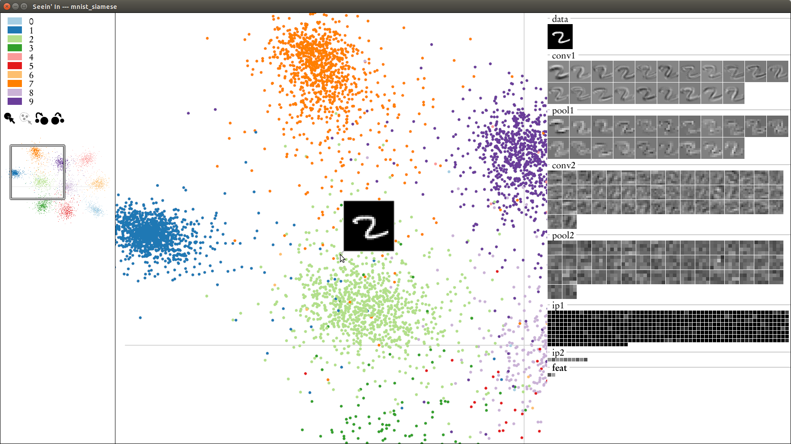

Seein' In
Tanner Schmidt

Abstract: This paper presents Seein’ In, an interactive tool for visualizing trained convolutional neural networks. The core visualization is a layer-by-layer scatter plot matrix, plotting pairs of dimensions of the intermediate feature maps produced by the network given a large input dataset. This display is coordinated with another display showing at once all activations produced by a single image, or the average activation produced by a subset of the images. A variety of navigation techniques support and encourage exploration of the vast amount of data contained in these displays. This tool should prove useful for machine learning researchers wishing to make more informed decisions about network architectures and learning parameters.